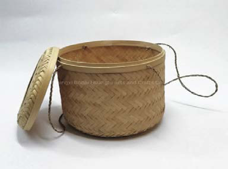
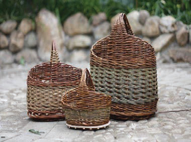

Kazi ya kufanya namba 6

Jadili namna ya kuendeleza shughuli za ufinyanzi nchini kwa sasa ili kukuza uchumi wa viwanda.
Wafinyanzi hoyee! Alisema bibi Mkisi na kuhitimisha simulizi yake. Hoyee! Wageni waliitikia huku wakipiga vigelegele na makofi.
Alifuata Mzee Pakawa wa kabila la Wandali ambaye alieleza kuhusu shughuli za viwanda vya ususi.
Shughuli za uchumi za ususi
Mzee Pakawa alianza simulizi kwa kuelezea kuwa:
Jamii nyingi zilikuwa na maendeleo katika shughuli za viwanda vya ususi. Viwanda vya ususi vilitengeneza vitanda vya kamba, nyungo, nyavu za kuvulia samaki, vikapu, mikeka na kadhalika. Vitu hivi vilitengenezwa kwa ajili ya shughuli za uchumi na matumizi ya nyumbani. Mzee Pakawa alionesha mfano wa vikapu vilivyotengenezwa katika viwanda vya ususi kama vinavyoonekana katika Kielelezo namba 4.


Kielelezo namba 4: Vikapu
Shughuli za ususi zilifanyika kwa kutumia ukindu, miwaa, makuti na mianzi.
Pia, viwanda vya ususi vilitengeneza nyavu ambazo zilitumika kama mitego ya kutegea wanyama na ya kuvulia samaki. Mitego ilitengenezwa kwa kutumia nyuzi laini. Usukaji wa bidhaa hizi ulitumia matete, miwaa, mianzi na makuti. Jamii